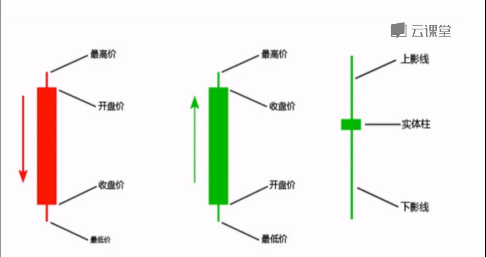
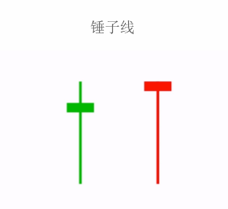
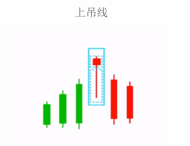
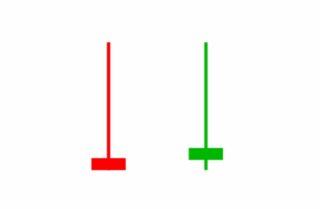
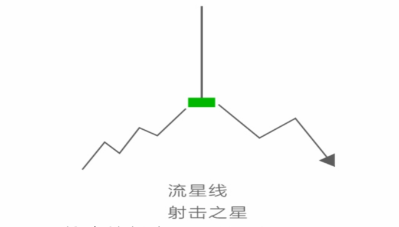
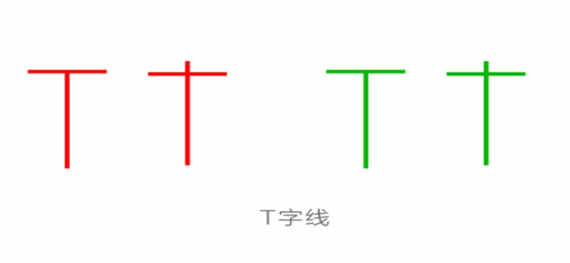
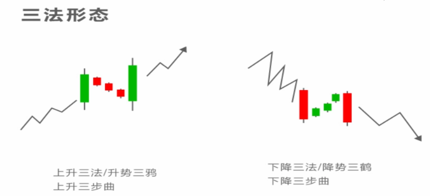
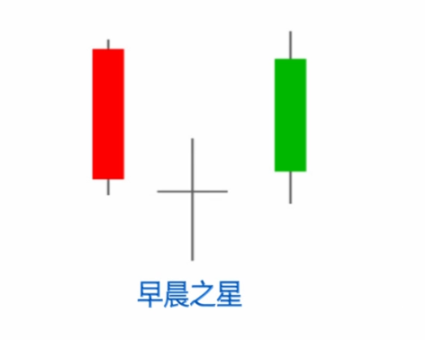

K线入门笔记
即使被庄家收割是韭菜无可逃避的的命运，我们也要做一棵有上进心的韭菜。去年12月中旬接盘两万的比特币一直拖到现在，三万本金只剩三千不到，终于忍不住得开始学习投资相关的知识了。 这篇是网课《K线入门》的学习笔记
什么是K线
英文：Candles Chart，又名蜡烛图。日本德川幕府时期米商发明。

影线表明多空搏斗的迹象，实体大小表明市场力量。
单根k线形态
分类：
- 大K线：变动在百分之七以上
- 中K线：幅度在百分之三到百分之七之间
- 小K线：幅度在百分之一到百分之三之间
大阳线，可能盘整末期加速上涨，跌势末期跌势可能减弱甚至反转，涨势末期有见顶回落的风险
大阴线，表明有下跌倾向。
- 大幅上涨后出现大阴线，如果对应成交量有所放大，表明主力有出货倾向，卖出为宜。
- 横向盘整状态，出现大阴线，印证盘久必跌
- 刚开始下跌出现大阴线，对跌势起到确认的作用，建议投资者应当清仓退出
- 较大跌幅或连续下跌后出现大阴线，暗示做空能量已接近力竭，建议做好买进准备。
注意：K线图的用处主要是显示市场情绪，释放信号，并不意味着行情立马反转

十字星，上下影线很长，没有实体或者实体很小
- 上升与下跌阶段出现十字星，并未改变趋势，只是起到中继作用。
- 上升或下跌末期，代表反转变盘的

锤子线，实体很短，下影线长于实体两倍以上，没有上影线或者上影线很短，可阴可阳。主要出现在整体价格的底部，代表买入信号。

上吊线，与锤子线对应，当出现在顶部且交易量放大时，是卖出的信号。
倒转锤头与射击之星

倒转锤头，倒转的锤子线，出现在下跌趋势中，通常已有较大跌幅，或出现在阶段性地位。
应用情况：虽然阳线倒转锤头比阴线更看涨，但两者区别并不太大。一般来说，上影线越长实体越小，下跌时间越长幅度越大，倒转锤头的止跌更明显，反转的可能也越大；同时应当注意，上影线说明上方的力量较大，因此在倒转锤后需要等待第二根阳线、最好是大阳线或者其他看涨信号进行确认。

射击之星, k线实体很小，可阴可阳，上影线很长，通常是实体两倍以上，没有或有很短的下影线。经常出现在上升趋势中，同场已经有较大涨幅或者处于相对高位。。
代表含义：出现在上升趋势中是见顶信号，后市看跌。说明币价大幅上涨后多空双方争夺进入白热化，最终空方胜出取得主动权；特别是在高价区出现表明上升动力严重不足，特别是上影线很长且成交量巨大的话，说明下跌趋势无法阻挡。
应用：
- 在日K中顶部见到射击之星，建议先减部分仓位，待次日币价收阴，形成其他看跌组合再离场；
- 阴线射击之星比阳线射击之星看跌信号更强烈，实体与影线比例越悬殊见顶信号越强烈；
- 若币价涨幅不大，且射击之星对应成交量没有有效放大，可能是主力诱空陷阱，可以结合次日行情再做判断。

T字线 又名庄家线，开盘价，收盘价，最高价粘在一起，成为一字，但最低价有相当一段距离。
应用：
位置不同，技术含义也就不同。出现在币价有较大涨幅之后（或在上涨趋势末端）是见顶信号，应提高警惕落袋为安；出现在币价有较大跌幅后，即下跌末端，是见底信号；出现在币价上涨或者下跌过程中，是趋势延续的信号。T线下影线越长，力度越大，信号越可靠。
注意：识别T字线是在趋势中还是趋势末端的要点，一是上升幅度不大那么出现高位T字线可能性就小，而是T字线之后币价中心上移说明庄家利用T字线在洗盘；若下沉，则是庄家利用T字线在出货。
倒T字线 ，形态特征：就是倒T字线
应用：出现在高价区，又叫下跌转折线，是卖出信号；出现在下跌末期，是买入信号，特别是末期下跌三连阴后出现倒T字线，或二黑夹一红后出现倒T字线，如果第二天出现大阳线，组成早晨之星或身怀六甲，是一个非常好的切入点。上影线越长，力度越大，信号越可靠
三法形态

形态特征：
- 在趋势中出现一根大K线或者中K线
- 出现若干根实体短小的K线，并且实体必须在第一根（包括影线）的高低点范围内。
- 出现一根与第一根同阴（下降）或者同阳（上升）的大K线，且开盘价和收盘价同时高于（同阳）或低于（同阴）第一根K线，全部吞没前三个根实体短小的K线。
含义：趋势暂时中断，但反转力量太弱不足以改变趋势，是一个盘整期。盘整后之前的趋势仍将延续。
清晨之星与黄昏之星

形态特征：
- 第一根K线是具有较大实体的阴线（最好是大阴线。下降趋势末期的大阴线可能是空方力竭的信号）
- 第二根K线是一根有下影线的小阳、小阴十字线，可带上下影线
- 第三根K线是一根阳线，它明显向上深入到第一天阴线的是体制内。
三根都具有反转效果的组合一起出现在趋势末期，是较为强烈的反转信号。
注意：
- 清晨之星也可以由多根K线组成，清晨双星、三星的K线组合与清晨之星意义基本相同
- 阳线实体深入阴线实体的部分越多，转势信号越强
- 第一根K线对应的成交量越小，第三根K线对应的成交量越大，其信号越可靠
- 清晨十字星的转势信号比一般的清晨之星强
应用：
- 清晨之星出现在下降趋势末端才具有看涨的意义。若跌幅不大，则信号可靠信也差。
- 若清晨之星出现后，次日价格向上跳空开盘或是在较高价位拉出一根放量阳线，则其转势向上的信号就越强。
- 清晨之星是次要的底部反转信号，一旦出现，等待次日验证信号就很重要。如果决定介入，清晨之星的最低价往往是很好的止损位，一旦跌破该价就应当及时止损出局。
- 应当结合均线系统进行分析，特别会大幅下跌后，均线系统中5日线有向上弯头迹象时，出现清晨之星则见底可靠性大大增强
- 如果中间的K线是螺旋桨，锤头线、倒锤头线等带有很长影线的K线，则见底信号更强
黄昏之星与清晨之星形态、意义相反。